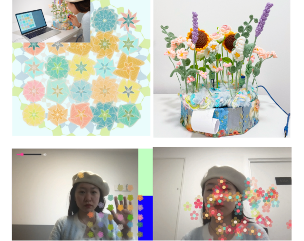

Introduction
Since ancient times, humans have sought to understand, transform and harness nature in order to meet the demands of life. The constant advancement of technology has enabled man to modify and manipulate the natural environment to a large extent, but this has also led to a number of problems, including resource depletion, environmental pollution and loss of biodiversity. But at the same time，Nature and artificiality are two integral parts of our lives. Nature represents disorder and randomness, while the artificial represents order and control. This contradiction leads us need to think about how to strike a balance between the two.
Concept and Background Research
Since ancient times, humans have sought to understand, transform and harness nature in order to meet the demands of life. The constant advancement of technology has enabled man to modify and manipulate the natural environment to a large extent, but this has also led to a number of problems, including resource depletion, environmental pollution and loss of biodiversity.
But at the same time，Nature and artificiality are two integral parts of our lives. Nature represents disorder and randomness, while the artificial represents order and control. This contradiction leads us need to think about how to strike a balance between the two.
Technical Implementation
The Arduino controls the position of the flowers generated on the screen by mouse clicks, while the rotation angle of the servo can be controlled to influence the orientation of the flowers, and at the same time ,the orientation of the flowers can be controlled by the position of the lights . through The difference between the two Photosensitive Sensor Module is used to determine whether the light intensity on the left and right sides is the same, if the difference is greater than 5 then the servo is controlled to rotate in the direction of the stronger light. Mimicking a greenhouse or indoor environment, the plant is exposed to more photosynthetic energy by adjusting the duration of the artificial light source, thus affecting its growth and flowering.
flower piano The images are activated by the camera testing the colour changes in the previous and next frames of the scene, while if the number of activations is greater than twenty a sound is played, expressing the desire to simulate and reproduce the beauty and vibrancy of nature through technical means, but at the same time the need to avoid over-control and planning, which might otherwise destroy the balance and beauty of nature.
By capturing the position of the nose through recognition and generating a pattern of flowers moving in random directions in its place, in this experiment human presence is seen as part of nature and also as a source of creativity. Our actions and choices affect the environment around us. This visual encourages people to become more aware of nature and their role in the ecosystem . The position and size and colour shape of the flowers are random, as well as the texture of the flowers. Contrasting this image with the rest of the image represents the disorder and randomness of nature, reflecting the vitality and diversity in nature, reminding us that we should respect and protect nature and not over-interfere with and destroy it .
The Arduino influences the growth of flowers through the magnitude of sound and artificial materials, expressing the fact that in life, for example, plant growth regulators and some synthetic fertilisers can be used to regulate plant growth, such as promoting flowering and delaying ageing, but that improper use may lead to abnormal growth and affect the shape and quality of flowers. Other experimental results have shown that plants exposed to specific frequencies of sound waves may exhibit faster growth rates, larger leaf areas, etc. Sound sensors detect sound waveforms and convert them into analogue voltage signals to control the shape of flowers and Adjusting potentiometer resistance to control the shape of the flower.
The position and size of the flowers and the shape of the colours are random, as well as the texture of the flowers. Contrasting this image with the rest of the image represents the disorderly and random nature of nature, the shape and colour of the flowers cannot be fully controlled this also reflects the vitality and diversity in nature, reminding us that we should respect and protect nature and not interfere with and destroy it excessively
Reflection and Future Development
Got a further boost to writing code .About the future Development,try adding sliders to make the size and colour of the flowers manageable and add options that can be controlled. The experimental screens are not particularly uniform when put together and attempts should be made to make them look more coherent.
References
- https://openprocessing.org/sketch/1880931 https://openprocessing.org/sketch/1527417 https://openprocessing.org/sketch/1322812
Cronon, William., Uncommon Ground : Rethinking the Human Place in Nature (W.W.Norton, 1995)
Marris, Emma, Rambunctious Garden : Saving Nature in a Post-Wild World (New York: Bloomsbury, 2011)
Lawton, John H., ‘Daily, G. C. (Ed.). 1997. Nature's Services. Societal Dependence on Natural Ecosystems. Island Press, Washington, DC. 392 Pp. ISBN 1-55963-475-8 (hbk), 1 55963 476 6 (soft Cover)’, Animal Conservation, 1.1 (1998), 75–76